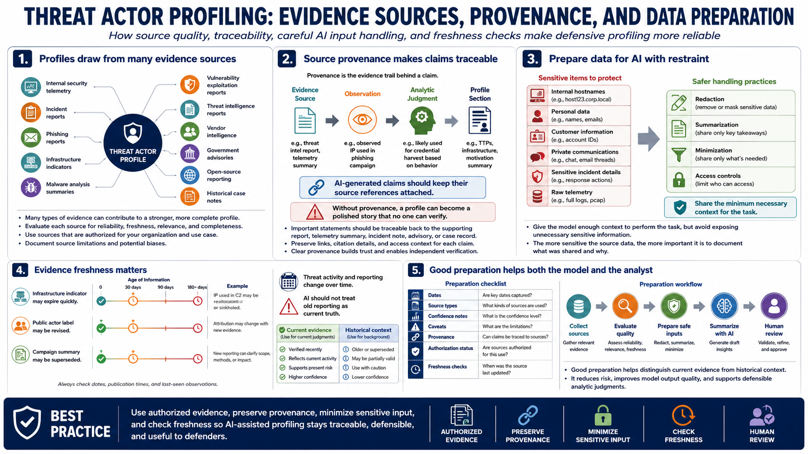

Evidence Sources and Data Preparation
Connecting to LMS... Progress: in progress

Narration
Threat actor profiles can draw from many evidence sources. Internal security telemetry, incident reports, phishing reports, infrastructure indicators, malware analysis summaries at a high level, vulnerability exploitation reports at a high level, threat intelligence reports, vendor intelligence, government advisories, open-source reporting, and historical case notes can all contribute. Each source should be evaluated for reliability, freshness, relevance, and whether it is authorized for the intended use.
Source provenance is the evidence trail behind a claim, observation, or analytic judgment. A profile should make it possible to trace important statements back to the report, telemetry summary, incident note, advisory, or case record that supports them. AI-generated claims should keep those references attached. Without provenance, a profile can become a polished story that no one can verify.
Preparing data for AI summarization requires restraint. Analysts should provide the model enough context to perform the task, but avoid exposing unnecessary sensitive information. Internal hostnames, personal data, customer information, private communications, sensitive incident details, and raw telemetry may need redaction, summarization, or access controls before they enter an AI workflow. The more sensitive the source data, the more important it is to document what was shared and why.
Evidence freshness matters because threat activity and reporting change. An infrastructure indicator may expire quickly. A public actor label may be revised. A campaign summary may be superseded by new evidence. AI can help summarize and compare sources, but it should not treat old reporting as current truth. Good preparation includes dates, source types, confidence notes, and caveats so the model and the analyst can distinguish current evidence from historical context.